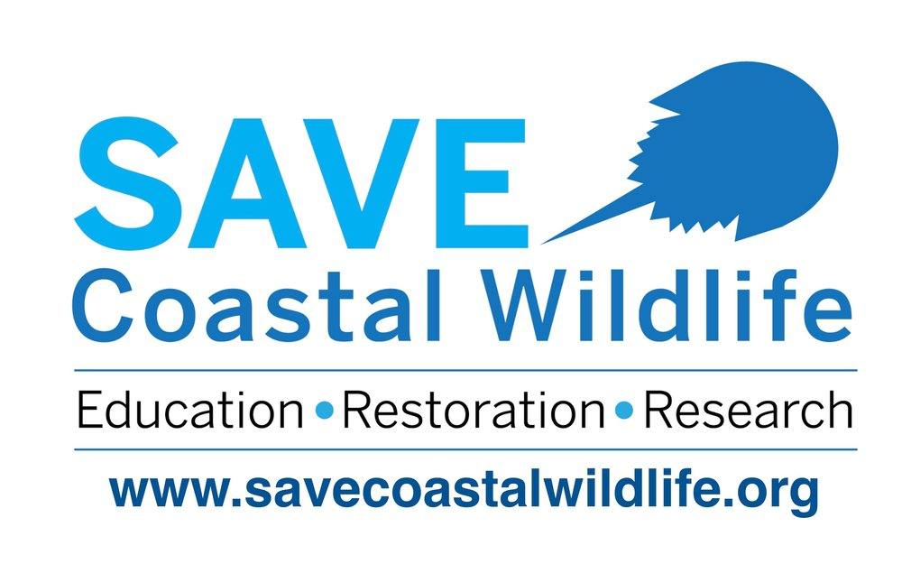

Here are some of the projects that I have worked on in the past:
ShellFinder
GitHub RepositoryFor my senior project in high school, I developed an award winning mobile application called Shell Finder, an app that uses artificial intelligence to identify different seashells found along the New Jersey coast. I designed this app using Xcode, which is an official Apple software development tool. During the course of that project, I gained invaluable experience in understanding the design process and tailoring a project to meet a client’s needs.
This summer, I revisited this project and improved many of its features. In order to make our app functional, we made a custom AI model for each of the 15 different kinds of shells that can be found in New Jersey. To do so, we visited many beaches and bays around New Jersey at captured about a thousand pictures of each shell for our database. Once we amassed a sufficient enough dataset, we uploaded our images onto a website called Roboflow, where we had the task of manually annotating every image in the dataset so the model could more accurately identify shells. Once all the images were annotated, we trained our model using YOLOv9 in a Google Colab notebook.
In addition to creating the AI model, we also had to implement many of the main features of the app to make it functional. These included connecting the phone's camera to the app, creating a database page where users can view every shell, and a logging system using Firebase in order to save user data.
In October 2023, I was awarded the Green Ambassador Scholarship by Solar Landscape/Sustainable Jersey City for developing the Shell Finder mobile app, which utilizes artificial intelligence to identify different seashells along the New Jersey coast. I created this app using Xcode, an integrated software development tool for Apple products. This app required formulating a customized dataset of over 3,000 photographs taken by hand. Because of my experience with Xcode, I was invited to mentor a student at the Marine Academy of Science and Technology (MAST) who is also developing an iOS app for her Systems Engineering II Senior Project.
Mentorship
Due to my experience and background in app development, I had the opportunity to mentor a senior at my former high school, the Marine Academy of Science and Technology. This student, working on her senior project, developed an iOS app called SCW Seal Observation Log. The app was created in partnership with the non-profit organization Save Coastal Wildlife and was designed specifically for logging harbour seal sightings along the coast.
As her mentor, I was deeply involved in various aspects of her project. I offered guidance on coding practices, helping her troubleshoot technical issues and optimize her app’s performance. My support extended to design work, where I assisted her in creating an intuitive and user-friendly interface, ensuring that the app met both functional and aesthetic standards. Additionally, I provided advice on project direction, helping her navigate the challenges of balancing technical development with project goals and stakeholder expectations.
Through this mentorship experience, I was able to leverage my skills and knowledge to support a fellow student in achieving her project objectives, while also giving back to my high school community. The experience was rewarding, as it allowed me to contribute to a meaningful project that benefits coastal wildlife conservation efforts and helped shape the next generation of app developers.